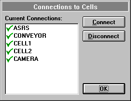

The Dispatcher
The function of the dispatcher is to control the set of cells during production. It executes the schedule by dispatching work-orders and constantly monitoring the cells for BUSY and IDLE messages. The schedule is updated as events, such as processes starting and finishing, occur on the shop floor. The main screen shows the Gantt chart of processes scheduled in time produced from the scheduling module. A line representing the current time moves across the screen and the schedule is recalculated every second. If a process runs late or finishes early, the other processes in the schedule are altered accordingly. A detailed journal of events is recorded for analysis later. The dispatcher also maintains a journal of status information and sends machine information to the Simulator.
Usage
The dispatcher uses a pre-compiled schedule, loaded from the database using the standard file selection dialogue accessible from the
Open item in the File menu. The schedule is displayed in a similar way to the Schedule view of the Scheduler. The components are listed down the vertical axis; their processes are shown as a Gantt Chart with time on the horizontal axis. The processes are all initially white, being coloured to indicate their state once the schedule has started.The main screen shows a Journal window with the schedule. This window may be moved around the screen and re-sized. During execution of a schedule, the Journal window provides a description of all events occurring in the Dispatcher, including commands being issued and status information being received.
When a schedule is loaded from the database, the Dispatcher immediately attempts to make connections to the cells in the Cell List of the shop floor used to prepare the schedule. Microsoft Windows for Workgroups locates the specified cell computer and replies that it has made a connection to that computer. This connection must be verified by Windows which takes a couple of seconds. If the connection to the Cell Manager has not been made correctly then a Disconnect message is sent and the Dispatcher will be disconnected from the cell. The effect of this procedure is that the Dispatcher first reports that it has made a connection to a cell computer, the connection is then verified and the Dispatcher may be Disconnected if the cell manager cannot be located. Any Disconnection messages are shown in the Journal window.
A schedule is executed by pressing the
Start menu item in the Execute menu. If some cells are not connected, a message box asks if execution should continue. If the user chooses to run the schedule, or if all cells are properly connected, the schedule will be executed.During execution of a schedule, a vertical bar representing the current time moves from the left edge of the schedule to the right. When this bar reaches the beginning of a process, the process is validated and executed if appropriate. The process will turn green to show that it has started, and the command associated with that process will be dispatched to the appropriate cell controller. If a process is not permitted to start at the current time because of a potential capacity overflow or the late-running of another process, the schedule will be recalculated allowing for this event, with the late running process being given more time or the process causing a capacity overflow being postponed.
When an IDLE message is received from a previously started process, the process has finished and the schedule is recalculated to take this into account.
The execution continues until all components have been completed or until the user presses the
Stop item in the Execute menu. The execution of the schedule is also stopped if an error occurs in a cell, or if a communications breakdown occurs. The error is displayed to the user in the Journal window.
At any time the user can see which cells are connected to the dispatcher with the
Connections item in the Service menu which displays a list of all cells. A tick against the cell name indicates that the Dispatcher is connected; a disconnected cell will be shown with a cross. In this example all the cells are properly connected. A user may select a cell by clicking over it with the left mouse button and forcing a connection or disconnection by pressing the appropriate button.Other items in the Service menu are
DisconnectAll and Reset. DisconnectAll forces each cell to disconnect communications links with the Dispatcher. This must be carried out before shutting down the dispatcher, otherwise the communication links will be left connected to the Host computer. Any further attempts to connect to the same cell will fail because there is already a broken connection to it. It must be noted that it takes a few seconds to disconnect from all the cells, so the Dispatcher must not shut down until it receives the Disconnection message from each of the Cells.The
Reset item closes any previously loaded schedule and resets the time to zero. It returns the Dispatcher to its initial state, ready for a new schedule to be loaded and executed. This action can only be performed when there are no communications links active.Dispatcher Controls
The File Menu
Open
– Loads a schedule from the database and attempts to make connections to the necessary cells.Print Preview
– Shows a preview of the print output.Print Setup
– Configures the printer.Exit
– Quits the Dispatcher having confirmed that there are no connections to any cells.
The Edit Menu
Copy
– Copies the current schedule, including the state of all processes and the current time, to the clipboard. The schedule can then be pasted into the Scheduler for modification.Paste
– Resets the Dispatcher and loads a new schedule from the clipboard.The View Menu
Scale
– Allows the user to alter the appearance of the schedule by entering horizontal and vertical scaling factors.Chart
– Displays the schedule as a Gantt chart of processes, arranged in component groups.Cell
– Shows the schedule as a Gantt chart of processes for each cell.
The Service Menu
Reset
– Resets the Dispatcher to its initial state. The schedule is closed, the timer is returned to zero and all connections are broken.DisconnectAll
– Sends the disconnect message to all cells.Connections
– Shows the list of connections to the user. A cell can be selected and its connection state altered by pressing the Connect and Disconnect buttons.The Execute Menu
Start
– Executes the schedule from the current time.Stop
– Aborts execution of the schedule.